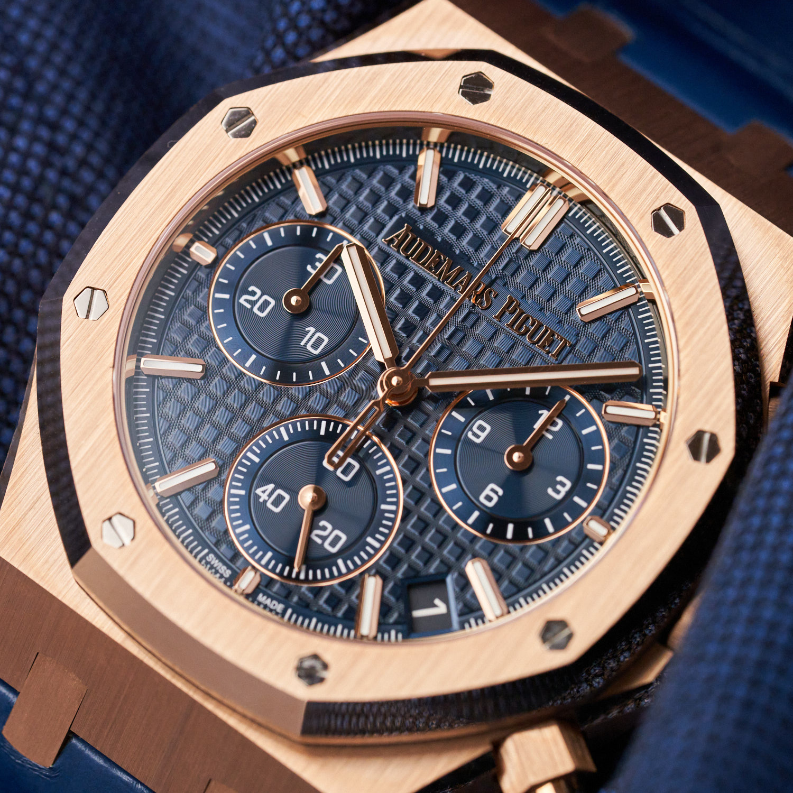

Audemars Piguet Royal Oak Chronograph "50th Anniversary" - Klasyczna Elegancja i Nowoczesna Wydajność
Audemars Piguet Royal Oak Chronograph "50th Anniversary" - Klasyczna Elegancja i Nowoczesna Wydajność
Zegarki Audemars Piguet to synonim luksusu, wyjątkowego designu i precyzji zegarmistrzostwa. Kiedy myślimy o tej renomowanej marce, często przychodzi na myśl słowo "klasa." Model Royal Oak to jedno z najbardziej ikonicznych dzieł marki, które zdobyło szerokie grono fanów na całym świecie. Jednak to wydanie, Audemars Piguet Royal Oak Chronograph SELFWINDING CHRONOGRAPH 26240OR "50TH ANNIVERSARY," ma coś wyjątkowego.

Wyjątkowy Design
Na pierwszy rzut oka, to niebieska tarcza tego zegarka przykuwa naszą uwagę i staje się centralnym punktem charakterystycznego wzornictwa. Niebieski to kolor, który nie tylko wydaje się być odważnym wyborem, ale również symbolizuje prestiż i ekskluzywność. To odważny krok, który wyróżnia ten model od innych w kolekcji.
Niebieska tarcza Audemars Piguet Royal Oak Chronograph SELFWINDING CHRONOGRAPH 26240OR "50TH ANNIVERSARY" emanuje głębokim odcieniem, który przypomina niebawem po zachodzie słońca morskie fale. To niebieskość, która ma w sobie nutę elegancji, jednocześnie pozostając niezwykle nowoczesna. Ta tarcza jest wyjątkowo przyciągająca wzrok i stanowi harmonijny kontrast z różowym złotem koperty.
Charakterystyczny oktagon Audemars Piguet, wzorowany na klasycznym modelu Royal Oak, dodaje temu zegarkowi niezwykłego uroku. Ten ośmiokątny kształt odzwierciedla starożytną fortalicję i stanowi znak rozpoznawczy marki. Zestawienie oktagonu z elegancką niebieską tarczą nadaje temu zegarkowi unikalny wygląd, który przyciąga uwagę zarówno miłośników tradycyjnej elegancji, jak i tych, którzy poszukują awangardy w dziedzinie zegarmistrzostwa.
Ostatecznie, to połączenie niebieskiej tarczy i charakterystycznego oktagonu stanowi nie tylko znak rozpoznawczy tego modelu, ale także świadczy o dbałości Audemars Piguet o detal i estetykę. To zegarek, który nie tylko pokazuje czas, ale również jest dziełem sztuki i wyrazem indywidualnego stylu. Dla miłośników zegarków, ten model jest hołdem dla tradycji, z niespodzianką nowoczesności.
Moc i Precyzja
Audemars Piguet Royal Oak Chronograph "50th Anniversary" to nie tylko piękny zegarek, ale także ukryta potęga zegarmistrzostwa, która napędza ten stylowy czasomierz. Mechanizm automatyczny kalibru 4401, użyty w tym zegarku, to owoc zaawansowanego inżynieringowego geniuszu i wieloletnich badań. Jest to serce zegarka, które zapewnia nie tylko niezwykłą dokładność, ale także niezawodność na najwyższym poziomie.
Kaliber 4401 to więcej niż tylko zwykły mechanizm automatyczny. To zaawansowany mechanizm chronograficzny, który pozwala na dokładne pomiar czasu z funkcją stopera. Ten mechanizm działa z niesamowitą precyzją, zapewniając, że każdy pomiar czasu jest dokładny w najmniejszym szczególe. To nie tylko narzędzie do mierzenia czasu, ale prawdziwe dzieło inżynierii zegarmistrzowskiej.
Jednym z wyróżniających się aspektów tego zegarka jest jego długotrwała rezerwa chodu wynosząca imponujące 70 godzin. To oznacza, że po pełnym nawinięciu zegarka, możesz cieszyć się jego precyzyjnym działaniem przez ponad dwa dni, zanim będzie konieczne ponowne nakręcenie. Dla miłośników zegarków, którzy posiadają różne modele w swojej kolekcji, ta długa rezerwa chodu jest niezwykle praktyczna i eliminuje potrzebę częstego nakręcania.
Ostatecznie, Audemars Piguet Royal Oak Chronograph "50th Anniversary" to połączenie eleganckiego designu z zaawansowanym mechanizmem, który stanowi kwintesencję sztuki zegarmistrzowskiej. To zegarek, który nie tylko prezentuje się imponująco na nadgarstku, ale także sprosta najwyższym standardom precyzji i niezawodności. To inwestycja, która nie tylko zachwyci miłośników zegarków, ale także dostarczy niezliczone lata satysfakcji z użytkowania.
Materiały Najwyższej Jakości
Główną cechą, która wyróżnia Audemars Piguet Royal Oak Chronograph "50th Anniversary," są materiały najwyższej jakości, z których został wykonany.
Różowe złoto, z którego wykonana jest główna koperta tego zegarka, to materiał o niezrównanym blasku i elegancji. Różowe złoto jest wyjątkowe ze względu na jego ciepły, subtelny odcień, który nadaje zegarkowi niepowtarzalnego uroku. Jest to materiał, który od dawna jest symbolem luksusu i wysokiej klasy. Różowe złoto jest trwałe i odporne na korozję, co sprawia, że jest doskonałym wyborem dla zegarka, który ma zachować swoją piękność przez lata.
Tarcza z safiru jest kolejnym znaczącym elementem tego zegarka. Safir to jeden z najtwardszych materiałów na świecie, co sprawia, że jest on odporny na zarysowania i uszkodzenia. Tarcza z safiru zachowuje swoją klarowność i blask przez długie lata, niezależnie od tego, jak aktywny jest twój tryb życia. Jest to szczególnie ważne dla miłośników zegarków, którzy oczekują, że ich inwestycja będzie trwała przez pokolenia.
Ostatecznie, połączenie różowego złota i tarczy z safiru stanowi wyraz dbałości marki Audemars Piguet o jakość i wyrafinowanie. To zegarek, który nie tylko jest piękny, ale także wykonany z myślą o trwałości i niezawodności. Materiały najwyższej jakości są fundamentem, na którym zegarmistrzowie budują ten majstersztyk, a efekt jest zaskakujący - zegarek, który nie tylko spełnia najwyższe standardy, ale także przekracza je w kwestii estetyki i trwałości. To prawdziwe dzieło sztuki na nadgarstku każdego miłośnika zegarków.
Podsumowanie
Audemars Piguet Royal Oak Chronograph SELFWINDING CHRONOGRAPH 26240OR "50TH ANNIVERSARY" to nie tylko zegarek, to prawdziwe arcydzieło zegarmistrzostwa. Kombinacja klasycznego designu z nowoczesną technologią czyni go wyjątkowym na tle innych czasomierzy.
Niebieska tarcza i różowe złoto nadają temu zegarkowi niepowtarzalny charakter. Niebieski symbolizuje prestiż i ekskluzywność, co stanowi odważne odejście od konwencji. Charakterystyczny oktagon Audemars Piguet, wzorowany na klasycznym modelu Royal Oak, dodaje temu zegarkowi niezwykłego uroku.
Jednak to nie tylko wygląd, który robi wrażenie. Mechanizm automatyczny kalibru 4401 jest owocem zaawansowanego inżynieringowego geniuszu, gwarantując niezwykłą dokładność i niezawodność. A długa rezerwa chodu wynosząca 70 godzin oznacza, że zegarek działa przez długi czas bez potrzeby nakręcania, co jest szczególnie praktyczne.
Co ważne, Audemars Piguet Royal Oak Chronograph "50th Anniversary" to nie tylko narzędzie do mierzenia czasu, to wyraz osobistego stylu i prestiżu. To inwestycja, która nie tylko zdobi nadgarstek, ale również świadczy o Twoim wyjątkowym guście i szacunku dla zaawansowanego zegarmistrzostwa. To zegarek dla tych, którzy doceniają piękno, precyzję i trwałość. To prawdziwe dzieło sztuki, które przetrwa próbę czasu i będzie dumną dziedzictwem dla przyszłych pokoleń.